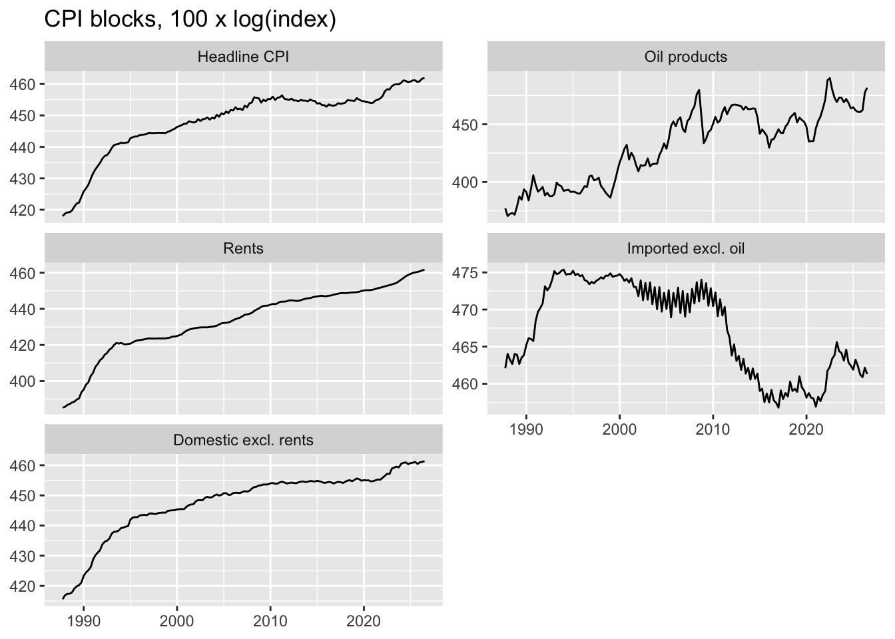
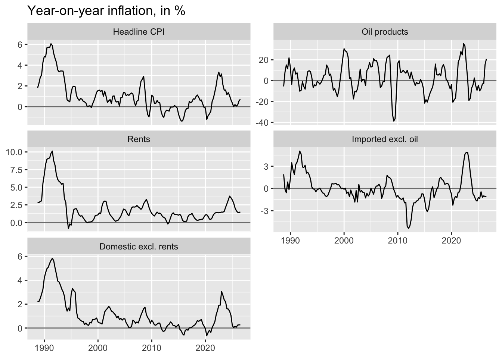

This file comes after 02_dta_cleaning.qmd. It only reads the quarterly data built there and does descriptive analysis and model selection. No data is built or changed here.
── Conflicts ────────────────────────────────────────── tidyverse_conflicts() ──
✖ dplyr::filter() masks stats::filter()
✖ dplyr::lag() masks stats::lag()
ℹ Use the conflicted package (<http://conflicted.r-lib.org/>) to force all conflicts to become errors
library(urca) # ur.df() (ADF), ur.kpss() (KPSS)library(forecast) # nsdiffs()clean_dir <-here("DTA_CLEAN")# Quarterly data built in 02: headline CPI, the 4 blocks and the oil driversquarterly <-read_csv(file.path(clean_dir, "quarterly_data.csv"), show_col_types =FALSE)# Logs x 100 of every series: a first difference is then (approximately)# the quarterly change in %quarterly <- quarterly %>%mutate(across(-date, ~100*log(.x), .names ="l_{.col}"))# Check: period covered, number of quarters, columnsrange(quarterly$date)
# Readable names for the 5 series (headline + 4 blocks)block_names <-c(l_cpi_total ="Headline CPI",l_cpi_oil ="Oil products",l_cpi_rent ="Rents",l_cpi_imp_xoil ="Imported excl. oil",l_cpi_dom_xrent ="Domestic excl. rents")# Long format (one row per quarter and series), with the quarterly change# (q-o-q) and the change over 4 quarters (y-o-y), both in %inflation <- quarterly %>%select(date, all_of(names(block_names))) %>%pivot_longer(-date, names_to ="series", values_to ="log_index") %>%group_by(series) %>%mutate(qoq = log_index -lag(log_index),yoy = log_index -lag(log_index, 4)) %>%ungroup() %>%mutate(series =factor(block_names[series], levels = block_names))# Levels: trends and breaksggplot(inflation, aes(date, log_index)) +geom_line() +facet_wrap(~ series, scales ="free_y", ncol =2) +labs(title ="CPI blocks, 100 x log(index)", x =NULL, y =NULL)

# Year-on-year inflation: the deflation episodes and the 2022 surgeggplot(filter(inflation, !is.na(yoy)), aes(date, yoy)) +geom_hline(yintercept =0, colour ="grey50") +geom_line() +facet_wrap(~ series, scales ="free_y", ncol =2) +labs(title ="Year-on-year inflation, in %", x =NULL, y =NULL)

Two regimes: the early 1990s, then low inflation. Every block has high inflation from 1989 to 1993: rents up to 10 %, headline about 6 %. After that, inflation stays below 3 %. The early 1990s don’t look like the rest of the sample, which is a good argument for starting the estimation sample in the late 1990s or 2000.
The deflation period is visible. It’s strongest in imported excl. oil: its level drops by about 12 % between 2011 and 2016, and its y/y inflation reaches −5 % in 2012. That’s the strong franc. Headline and domestic excl. rents are also slightly negative over 2012–2016 and in 2020.
Seasonality in imported excl. oil, but only from 2000 to about 2015. Look at the zig-zag in its level panel. It’s mostly clothing and shoes, whose prices fall during the January and July sales. Before 2000 the BFS didn’t record sale prices, so there’s no zig-zag. After about 2015 it gets weaker. So that seasonal pattern changes over the sample, which matters for the seasonality chunk.
Rents rise smoothly. There are no breaks and no seasonality, and growth is almost constant after 1995, just slower in 2010–2020. It will be the easiest ARIMA.
Oil is very volatile. It moves between −40 % and +35 % y/y, with crashes in 2009, 2015 and 2020, and spikes in 2000, 2008 and 2022. That’s why it gets its own model with Brent and the USD rate.
Inflation in 2021–2023 was a common shock that shows up in every block, followed by a fall back to about 0–1.5 %.
2. Descriptive statistics
# Sub-periods seen in the plotsinflation <- inflation %>%mutate(period =case_when(year(date) <=1993~"1988-1993 high inflation",year(date) <=2008~"1994-2008 low inflation",year(date) <=2016~"2009-2016 strong franc",year(date) <=2020~"2017-2020",TRUE~"2021-2026 surge and fall"))# Quarterly inflation (q-o-q, in %), whole sample from 2000inflation %>%filter(year(date) >=2000) %>%group_by(series) %>%summarise(quarters =sum(!is.na(qoq)),mean =mean(qoq),sd =sd(qoq),min =min(qoq),max =max(qoq),share_negative =mean(qoq <0)) %>%mutate(across(where(is.double), ~round(.x, 2)))
The blocks behave very differently, which justifies modelling them separately. Oil is very volatile: its standard deviation is 23 times that of rents. Rents are stable and almost always rising (only 8 % of quarters are negative). Imported excl. oil falls more often than it rises.
Imported excl. oil has a negative average (−0.12 % per quarter). The second table shows where it comes from: the strong-franc period 2009–2016 (−1.8 % y/y). In the other periods it’s close to zero or positive. This is the bias your coworker mentioned. An ARIMA with drift estimated from 2000 would carry this negative average into the forecast. It needs to be dealt with in model selection: a dummy for 2009–2016, or no drift.
Imported excl. oil is volatile (sd 1.89) for a non-energy block. Its y/y inflation is much smoother, so most of that volatility is the seasonal zig-zag from sales, not real inflation. The next chunk tests this.
The early 1990s are a different world, with inflation four to five times higher in every block. This supports starting the estimation sample after them, around 2000, rather than in 1988.
3. Seasonality
# Seasonality test for one block on one sample: regress q-o-q inflation on# quarter dummies; F-test H0 = "all quarters have the same mean inflation"seasonal_test <-function(data) { fit <-lm(qoq ~factor(quarter(date)), data = data) f <-summary(fit)$fstatistictibble(f_stat =round(f[["value"]], 2),p_value =round(pf(f[["value"]], f[["numdf"]], f[["dendf"]], lower.tail =FALSE), 4),r2 =round(summary(fit)$r.squared, 2))}# Test on the sample from 2000, and on two halves to see if the pattern changedseasonality <- inflation %>%filter(year(date) >=2000, !is.na(qoq)) %>%mutate(sample =if_else(year(date) <=2012, "2000-2012", "2013-2026"))bind_rows( seasonality %>%mutate(sample ="2000-2026"), seasonality) %>%group_by(series, sample) %>%group_modify(~seasonal_test(.x)) %>%ungroup() %>%as.data.frame()
Every series is I(1): non-stationary in levels, stationary in first differences. So all three ARIMA blocks use d = 1: we model quarterly inflation, not the price level. This is the standard result for price indices.
Domestic excl. rents is a borderline case in levels. The ADF rejects the unit root (−3.63 < −3.43), but the KPSS rejects stationarity. When the two tests disagree, the cautious choice is to difference. A wrongly undifferenced model gives badly biased long forecasts, while an unnecessary difference costs little.
Imported and domestic are only just stationary in differences (−2.97 and −2.92 vs −2.88). That fits the plots: their inflation stays away from its mean for long stretches (the strong-franc years, the 2022 surge). In the ARIMA this shows up as AR terms, and possibly the 2009–2016 dummy.
Imported excl. oil: the OCSB test asks for a seasonal difference. It confirms what we saw in chunk 4: the seasonal pattern isn’t fixed but shrinks over time. So in model selection we compare two options for this block: a seasonal difference (D = 1), or a seasonal AR term on top of d = 1.
Oil block: oil products, Brent and the exchange rate are all I(1). That’s exactly the condition for testing cointegration, a stable long-run link in levels, which justifies the ECM.
5. Model selection: ARIMA blocks
# The three ARIMA blocks, as quarterly time series from 2000Q1arima_vars <-c(Rents ="l_cpi_rent",`Imported excl. oil`="l_cpi_imp_xoil",`Domestic excl. rents`="l_cpi_dom_xrent")to_ts <-function(v) ts(sample_2000[[v]], start =c(2000, 1), frequency =4)# Candidate models: ARIMA(p,1,q)(P,0,0)[4] with drift,# p = 0..3, q = 0..2, P = 0 (no seasonal term) or 1 (seasonal AR)grid <-expand_grid(p =0:3, q =0:2, P =0:1)fit_grid <-function(y) {pmap(grid, \(p, q, P) { fit <-tryCatch(Arima(y, order =c(p, 1, q), seasonal =c(P, 0, 0),include.drift =TRUE),error =function(e) NULL)if (is.null(fit)) return(NULL)tibble(p = p, q = q, P = P,aicc = fit$aic, bic = fit$bic,# Ljung-Box on residuals, 8 lags (2 years): H0 = no autocorrelationlb_p =Box.test(residuals(fit), lag =8, type ="Ljung-Box",fitdf = p + q + P)$p.value) }) %>%list_rbind()}arima_grid <-imap(arima_vars, \(v, name) fit_grid(to_ts(v)) %>%mutate(block = name)) %>%list_rbind() %>%relocate(block)# Best 3 models by BIC in each blockarima_grid %>%group_by(block) %>%slice_min(bic, n =3) %>%mutate(across(c(aicc, bic, lb_p), ~round(.x, 3))) %>%as.data.frame()
# Re-estimate the best model by BIC of each block and show its coefficientsbest <- arima_grid %>%group_by(block) %>%slice_min(bic, n =1) %>%ungroup()best_fits <-pmap(best, \(block, p, q, P, ...) {Arima(to_ts(arima_vars[[block]]), order =c(p, 1, q), seasonal =c(P, 0, 0),include.drift =TRUE)}) %>%set_names(best$block)imap(best_fits, \(fit, name) {tibble(block = name, term =names(coef(fit)),estimate =coef(fit), se =sqrt(diag(fit$var.coef))) %>%mutate(t = estimate / se)}) %>%list_rbind() %>%mutate(across(where(is.double), ~round(.x, 3))) %>%as.data.frame()
Every coefficient is significant, and the residuals are clean (Ljung-Box p = 0.74). The drift of 0.36 % per quarter means about 1.4 % per year of long-run rent inflation, which is plausible. The seasonal AR is significant (0.27) even though chunk 4 found no seasonal means. It captures something different: this quarter’s rent inflation is related to the same quarter last year. That fits rents being adjusted once a year, for example after reference-rate changes. The top 3 are very close in BIC, so the choice isn’t critical.
Imported excl. oil: ARIMA(2,1,1)(1,0,0) + drift. Two issues:
The drift is negative (−0.14 % per quarter) and not significant. This is the strong-franc bias from the earlier discussion. Over a long horizon, this model would forecast steadily falling import prices. Options: drop the drift, or add a 2009–2016 dummy, then compare the forecasts. ar1 = −0.70 and ma1 = +0.74 almost cancel each other. This is a classic sign of a common factor: the two terms partly offset, and the model may be more complex than it needs to be. A simpler model is worth checking. The seasonal difference that the OCSB test suggested is also still open. It can’t be compared by BIC, because a seasonal difference changes the data being fitted. It has to be compared by out-of-sample forecast accuracy instead.
Domestic excl. rents: ARIMA(0,1,0)(1,0,0) + drift, the simplest possible.
Inflation depends only on the same quarter last year (sar1 = 0.73), which is the strong, stable January pattern from chunk 4. The residuals pass, but only just (p = 0.11). The second model, (1,1,0)(1,0,0), has almost the same BIC (30.2 vs 30.0), a better AICc and cleaner residuals (p = 0.62). I’d pick (1,1,0)(1,0,0) and say so in the report. The drift of 0.15 % per quarter (about 0.6 % per year) is borderline significant (t = 1.8), and also pulled down by the strong-franc years.
Overall: BIC gives a reasonable first choice. The two open points, the imported drift or dummy and whether a seasonal difference is better, are best settled by an out-of-sample forecast comparison (rolling forecasts, RMSE), which fits in the forecasting/evaluation file.
6. Oil products: cointegration and ECM
# Oil block variables (logs x 100), from 2000Q1oil <- sample_2000 %>%transmute(date,oil = l_cpi_oil, # CPI oil productsbrent = l_brent_usd, # Brent, USD per barrelusd = l_chf_per_usd, # CHF per USDtrend =row_number()) # linear trend (1, 2, 3, ...)# --- 1. Long-run relation (static regression in levels) ---# Without and with a linear trend; the trend captures slowly rising# taxes and margins (mineral oil tax, CO2 levy since 2008)lr_const <-lm(oil ~ brent + usd, data = oil)lr_trend <-lm(oil ~ brent + usd + trend, data = oil)summary(lr_const)$coefficients
# --- 2. Engle-Granger test: is the long-run residual stationary? ---# ADF on the residuals, no constant (they have mean 0 by construction).# Critical values are NOT the usual ADF ones: the residuals come from an# estimated regression. MacKinnon (2010), 3 variables, 5% level:# -3.74 (constant), -4.10 (constant + trend).eg_stat <-function(fit) {ur.df(residuals(fit), type ="none", lags =4, selectlags ="BIC")@teststat[1]}tibble(long_run =c("constant", "constant + trend"),eg_stat =c(eg_stat(lr_const), eg_stat(lr_trend)),cv_5pct =c(-3.74, -4.10)) %>%mutate(cointegrated = eg_stat < cv_5pct)
# --- 3. Johansen trace test (system approach, robustness check) ---# r = number of cointegrating relations; reject "r = 0" if stat > critical value.# K = 2 lags in levels, trend in the cointegrating relation, quarter dummies.johansen <-ca.jo(oil[, c("oil", "brent", "usd")], type ="trace",ecdet ="trend", K =2, season =4)cbind(stat =round(johansen@teststat, 2), johansen@cval)
stat 10pct 5pct 1pct
r <= 2 | 6.26 10.49 12.25 16.26
r <= 1 | 16.92 22.76 25.32 30.45
r = 0 | 37.80 39.06 42.44 48.45
# --- 4. Same effect of Brent and of the exchange rate? ---# If b_brent = b_usd, only Brent in CHF matters. Re-parametrised so that the# coefficient on usd is b_usd - b_brent: H0 = this coefficient is 0.summary(lm(oil ~I(brent + usd) + usd + trend, data = oil))$coefficients["usd", ]
Estimate Std. Error t value Pr(>|t|)
1.857003e-01 4.545423e-02 4.085434e+00 8.722655e-05
# --- 5. ECM lag selection ---# d_oil_t = c + alpha * ect_(t-1) + b * d_brent_t + g * d_usd_t# + L lags of d_oil, d_brent and d_usd# ect = residual of the long-run relation with trend (deviation from equilibrium)ecm_data <- oil %>%mutate(ect =residuals(lr_trend),ect_l1 =lag(ect),d_oil = oil -lag(oil),d_brent = brent -lag(brent),d_usd = usd -lag(usd))for (i in1:4) { ecm_data[[paste0("d_oil_l", i)]] <-lag(ecm_data$d_oil, i) ecm_data[[paste0("d_brent_l", i)]] <-lag(ecm_data$d_brent, i) ecm_data[[paste0("d_usd_l", i)]] <-lag(ecm_data$d_usd, i)}# All models on the same sample (lose the first 5 quarters), so BIC is comparableecm_sample <- ecm_data %>%slice(6:n())ecm_formula <-function(L) { lags <-if (L ==0) NULLelsepaste0(c("d_oil_l", "d_brent_l", "d_usd_l"), rep(1:L, each =3))reformulate(c("ect_l1", "d_brent", "d_usd", lags), response ="d_oil")}map(0:4, \(L) { fit <-lm(ecm_formula(L), data = ecm_sample)tibble(lags = L,bic =BIC(fit),alpha =coef(fit)[["ect_l1"]],t_alpha =summary(fit)$coefficients["ect_l1", "t value"],r2 =summary(fit)$r.squared,lb_p =Box.test(residuals(fit), lag =8, type ="Ljung-Box")$p.value)}) %>%list_rbind() %>%mutate(across(where(is.double), ~round(.x, 3)))